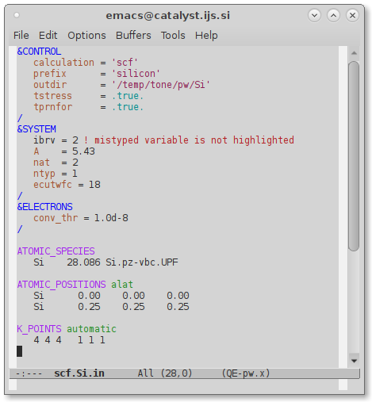
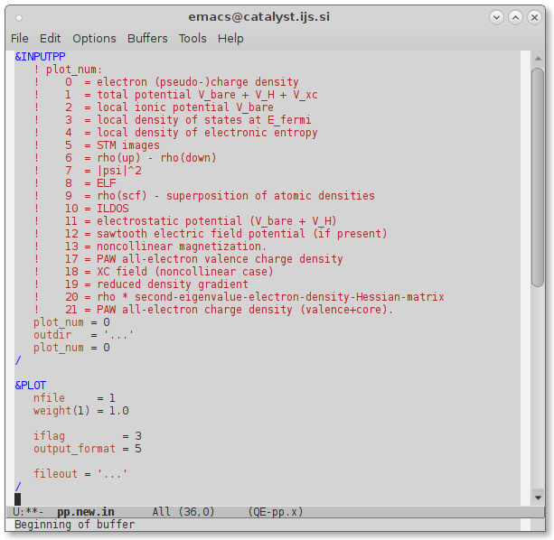

QE-emacs-modes User's Guide (v.7.1)
This guide covers the usage of QE-emacs-modes package (aka QE-modes): an
open-source collection of Emacs major-modes for making the editing of
QUANTUM ESPRESSO (QE) input files somewhat easier and more comfortable with Emacs
editor. The package provides syntax highlighting (see
Figure ![[*]](crossref.png) ), basic auto-indentation, and several utility
commands.
), basic auto-indentation, and several utility
commands.
QE-modes is free software, released under the GNU General Public License. See: http://www.gnu.org/licenses/old-licenses/gpl-2.0.txt, or the file License in the QUANTUM ESPRESSO distribution.
The QE-modes package was written by Anton Kokalj. The implementation of QE-modes was made possible by several useful and helpful resources that are gratefully acknowledged, in particular: Mode Tutorial of Scott Andrew Borton (https://www.emacswiki.org/emacs/ModeTutorial for indentation code), Derived Mode and Sample Mode pages (https://www.emacswiki.org/emacs/DerivedMode, https://www.emacswiki.org/emacs/SampleMode) as well as the very useful resources of Xah Lee (http://ergoemacs.org/emacs/elisp_syntax_coloring.html). Sebastijan Peljhan is acknowledged for his work on xsf-mode that inspired the idea of writing the QE-modes. Last but not the least, Hongyi Zhao contributed the ido-completion-read snippet of Elisp code for selecting the values for the card's flags.
|

|
The installation of QE-modes package consists of two parts: (i)
installing the package itself and (ii) informing Emacs about it by
editing the user-init-file (typically $HOME/.emacs).
./install.shwhich will install the package in the qe-modes subdirectory of the $HOME/.emacs.d/ directory (the script copies the QE-modes *.el files to $HOME/.emacs.d/ and byte-compiles them into *.elc files).
If you prefer to install QE-modes into other directory, use instead:
prefix=where-to-install ./install.sh
A default QE-modes snippet for user-init-file is provided by
the qe-modes.emacs file in the QE-modes source package root
directory. If QE-modes were installed in default
$HOME/.emacs.d/qe-modes/ location, then the
qe-modes.emacs file can be used verbatim; just append its
content to your ~/.emacs file.
Here is a the explanation of the simplified qe-modes.emacs
file. Emacs is informed about the installed QE-modes by the
following lines in the user-init-file (e.g. $HOME/.emacs):
;; make sure package is visible to emacs (if needed)
(add-to-list 'load-path "/full/path/name/of/qe-modes")
;; load the package
(require 'qe-modes)
Furthermore, we can specify some filename patterns so that Emacs will
automatically recognize from the filename if it is some variant of the
QUANTUM ESPRESSO input file.
Say that we use the .in extension for the QUANTUM ESPRESSO input files in
general and more specifically, the pw., scf.,
relax., and vc-relax. prefixes for the pw.x input files
and neb., cp., ph., and pp. prefixes for the
neb.x, cp.x, ph.x, and pp.x input files. These filename recognitions can be
achieved by:
;; automatically open the *.in files with generic QE mode
(add-to-list 'auto-mode-alist '("\\.in\\'" . qe-mode))
;; automatically open the pw*.in, scf*.in, relax*in, vc-relax*.in files
;; with pw.x mode
(add-to-list 'auto-mode-alist '("/pw.*\\.in\\'" . pw-mode))
(add-to-list 'auto-mode-alist '("/scf.*\\.in\\'" . pw-mode))
(add-to-list 'auto-mode-alist '("/relax.*\\.in\\'" . pw-mode))
(add-to-list 'auto-mode-alist '("/vc-relax.*\\.in\\'" . pw-mode))
;; automatically open the neb*.in files with neb.x mode
(add-to-list 'auto-mode-alist '("/neb.*\\.in\\'" . neb-mode))
;; automatically open the cp*.in files with cp.x mode
(add-to-list 'auto-mode-alist '("/cp.*\\.in\\'" . cp-mode))
;; automatically open the ph*.in files with ph.x mode
(add-to-list 'auto-mode-alist '("/ph.*\\.in\\'" . ph-mode))
;; automatically open the pp*.in files with pp.x mode
(add-to-list 'auto-mode-alist '("/pp.*\\.in\\'" . pp-mode))
For those who are fans of regular-expressions, the above four lines for pw-mode can be expressed by the following one-liner:
(add-to-list 'auto-mode-alist '("/\\(pw\\|scf\\|\\(?:vc-\\)?relax\\).*\\.in\\'" . pw-mode))
If we want that emacs opens *.pwtk files in the PWTK QE mode,
we can use:
;; automatically open the *.pwtk files with the PWTK mode
(add-to-list 'auto-mode-alist '("\\.pwtk\\'" . pwtk-mode))
Once the package is installed according to the above instructions, we
are ready to use it. Let us, for the sake of example, open an existing
pw.x input file whose name does not match the above specified
filename pattern for the pw-mode. In such cases we can load the mode
with M-x pw-mode command and we will get the content of the file
highlighted as in Figure .
The QE-modes package contains a generic qe-mode and the following
specific modes: pw-mode, neb-mode, cp-mode, ph-mode, ld1-mode, and pp-mode.
The difference between them is only in the extent of the syntax
highlighting and auto-indentation. Namely, these modes recognize and
highlight namelists (and their variables) and cards (and their
options/flags) that they know about.
The generic qe-mode is aware of all of them for all those QUANTUM ESPRESSO programs that have explicit documentation in the form of
INPUT_PROG.html files (where PROGtypically stands for the uppercase name of the program). In contrast,
a given specific mode is aware only of namelists, variables, cards, and
options of the corresponding program.
|

|
The QE-modes package provides the following commands:
; default value of qe-indent is 3)
Possible completions are: pw-CELL pw-CELL_PARAMETERS pw-CONSTRAINTS pw-CONTROLwhereas typing a space or tab after M-x pw-c prints all the pw.x variables that starts with letter ``c'', i.e.:
Possible completions are: pw-c pw-calculation pw-cell_dofree pw-cell_dynamics pw-cell_factor pw-celldm pw-constrained_magnetization pw-conv_thr pw-conv_thr_init pw-conv_thr_multi pw-cosab pw-cosac pw-cosbcFrom this list we can see that there is only one variable that starts with ``ca'', hence typing M-x pw-ca[space][return], where [space][return] stands for space and return keys, prints at the point position of the current buffer:
calculation = ''
Another available completion is the selection of the card's flag value. For example, by typing:
M-x pw-K\_P[space][enter]the following list of possible values for the
K_POINTS's flag
appears:
The basic indentation offset in qe-modes is 3. It is controlled by qe-indent variable. Hence if you want to change it, add the following into your user-init-file (e.g. $HOME/.emacs):
(setq qe-indent myOffset)
To disable the auto-indentation for a given mode (are you really sure you want to do this), add the following into your user-init-file:
(add-hook 'mode-mode (lambda () (setq indent-line-function 'indent-relative)))
where mode is qe, pw, neb, cp, ph, ld1, or pp.
A simple way to get a QE-modes aware Vi-compatible editor is to use the Evil package – an extensible vi layer for Emacs (https://bitbucket.org/lyro/evil/wiki/Home). With the Evil mode enabled, Emacs will behave like the Vi editor, but with the QE-modes support.
This document was generated using the LaTeX2HTML translator Version 2019.2 (Released June 5, 2019)
The command line arguments were:
latex2html -t 'User's Guide for the QE-modes package' -html_version 3.2,math -toc_depth 5 -split 0 -toc_stars -show_section_numbers -local_icons -image_type png user_guide.tex
The translation was initiated on 2022-06-15